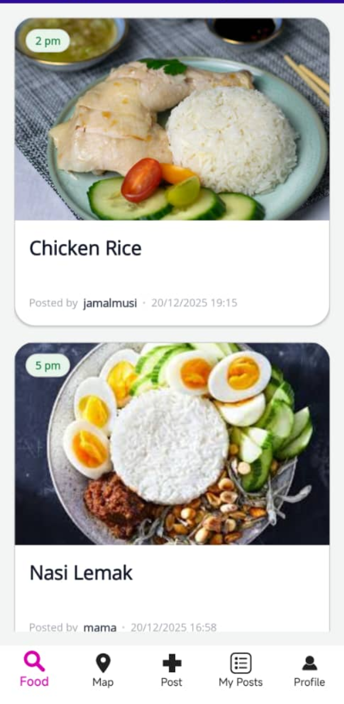
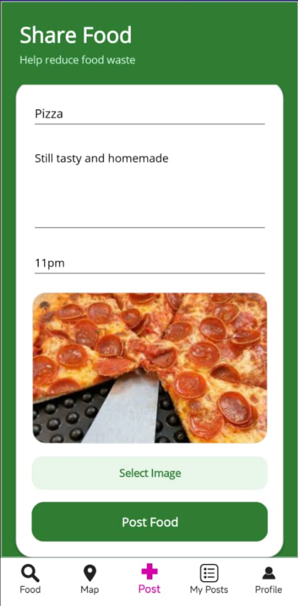
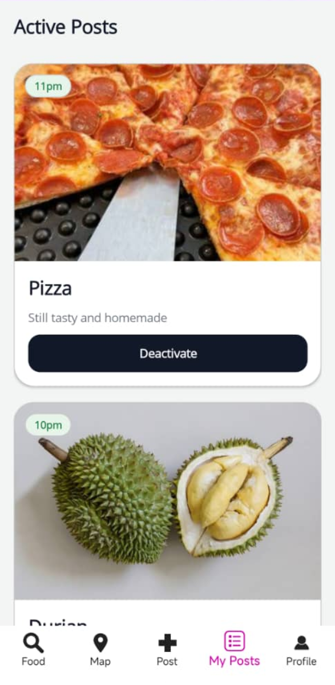
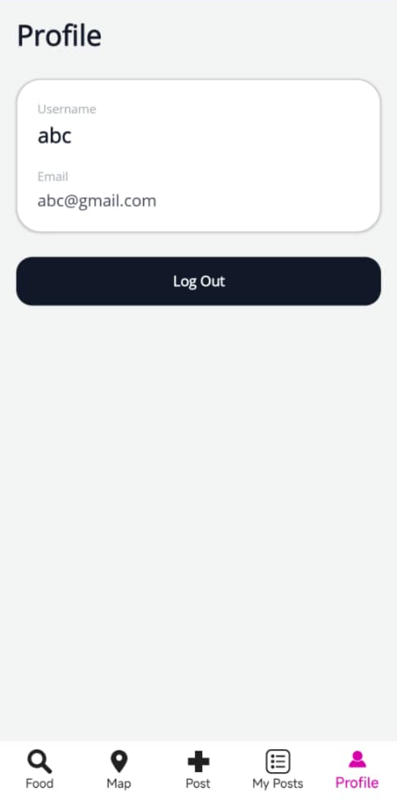

2. Main Features

Food Dashboard
The app has five main sections, accessible via the bottom navigation bar:
| Tab | Description |
|---|---|
| Food | Browse available food posts |
| Map | See food locations on a map |
| Post | Share your leftover food |
| My Posts | Manage your own posts |
| Profile | View your account & logout |
2.1 Food Dashboard
The Food tab is your home screen. Here you can browse all active food listings shared by the community.
Each food card displays:
- Image — A photo of the food item
- Pickup Time Badge — When the food should be picked up (e.g., "Before 8 PM")
- Title — Name/description of the food
- Description — Additional details about the food
- Posted by — The username of the person sharing
- Timestamp — When the post was created
2.2 Map View
The Map tab shows food locations on an interactive map.
Features:
- Street Map — Standard map view showing your area
- Your Location — The map shows your current location (if permissions granted)
- Food Pins — Each available food post appears as a pin on the map
2.3 Posting Food
The Post tab allows you to share your leftover food with the community.

Post Food Screen
To create a new food post:
- Navigate to the Post tab
- Enter food details:
- Food Title — Give your food a descriptive name
- Description — Describe the quantity, condition, and any notes
- Pickup Time — Specify when the food should be picked up
- Add an Image: Tap "Select Image" and choose a photo from your device
- Tap "Post Food" — Your listing will be shared with the community
2.4 My Posts
The My Posts tab lets you manage your food listings.

My Posts Screen
Active Posts
These are your currently visible listings that others can see. You can tap "Deactivate" to remove the post from public view when the food has been claimed.
Past Posts
These are posts you've previously deactivated, displayed with reduced opacity and marked as "Deactivated" for your reference.
2.5 Profile
The Profile tab displays your account information:

Profile Screen
- Username — Your display name
- Email — Your registered email address
- Log Out — Tap to sign out of your account